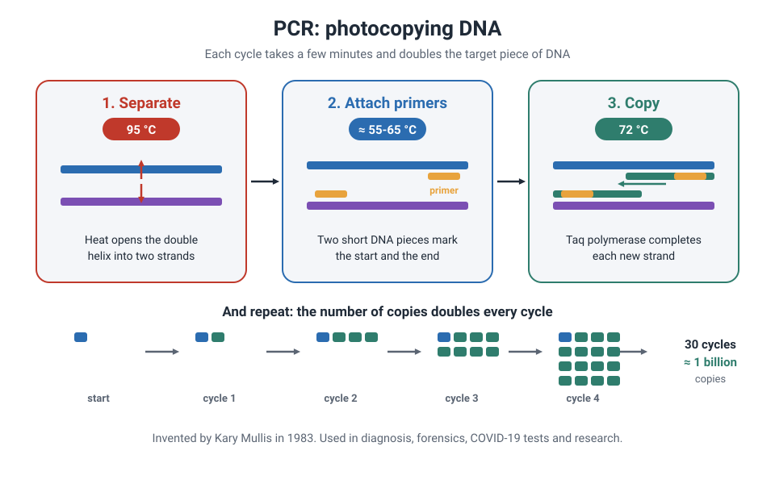

General information only. It does not replace advice from a health professional or genetic counselling.
At a glance
A genetic test analyses DNA, chromosomes or, sometimes, proteins to look for changes linked to a disease. No single test sees everything: each technique looks at the genome with a different "zoom". Choosing well depends on the question being asked.
| Technique | What it sees | Example of use |
|---|---|---|
| Karyotype | Whole chromosomes and large rearrangements | Down syndrome, translocations |
| FISH | One specific region, with a fluorescent probe | Quick confirmation of a known deletion |
| Microarray (CGH or SNP) | Losses or gains of DNA segments (CNVs) | Intellectual disability, birth defects |
| PCR and targeted methods | One specific variant or repeat | Huntington's, fragile X, a known family variant |
| Sanger sequencing | One gene or fragment, letter by letter | Confirming a variant |
| Panels, exome, genome | From dozens of genes to the whole genome | Rare diseases, hereditary cancer |


By purpose
- Diagnostic: confirm or rule out a disease in someone who already has symptoms. For example, studying the CFTR gene in a child with an abnormal sweat test.
- Predictive or presymptomatic: in healthy people with a family history, to find out whether they have inherited a variant that causes a late-onset disease, such as Huntington's disease, or that raises risk, such as BRCA1.
- Carrier: identify healthy people who carry one copy of a recessive variant and could pass it on.
- Prenatal: during pregnancy, on the fetus, from the placenta (chorionic villus sampling) or the amniotic fluid (amniocentesis).
- Preimplantation: on embryos created by IVF, before transfer to the uterus.
- Screening: offered to a whole population to find those at higher risk, such as the newborn heel-prick test.
- Pharmacogenetic: predict how a person will respond to a medicine.
- Tumour testing: looks for changes acquired by cancer cells in order to choose treatment. In principle it says nothing about what is inherited.
By technique
Cytogenetics: looking at chromosomes
A karyotype involves growing cells (usually from blood), stopping them when the chromosomes are condensed, staining them and arranging them in pairs. It detects extra or missing chromosomes (such as trisomy 21) and large rearrangements. Its resolution is low: it only sees changes of several million bases.
FISH (fluorescence in situ hybridisation) uses probes that glow when they bind to a particular region. It is fast and useful to confirm a suspicion, but it only looks where it is told to.
Microarrays: counting segments
Comparative genomic hybridisation arrays (array-CGH) and SNP arrays compare the patient's DNA with a reference at hundreds of thousands of points. They detect copy-number variants (CNVs): segments that are missing (deletions) or extra (duplications), much smaller than a karyotype can see. It is the recommended first test in children with intellectual disability, autism or multiple birth defects, because it finds the cause in about 15–20 % of cases. It does not see single-letter changes or balanced rearrangements.
Targeted molecular tests
PCR and its variants amplify a specific region. They are used to look for a variant already known in the family, to measure repeats (Huntington's disease, fragile X, myotonic dystrophy) or to detect common deletions (spinal muscular atrophy). MLPA counts copies of particular exons and is the method of choice for deletions in the dystrophin gene.
Sequencing
- Sanger sequencing reads a DNA fragment letter by letter. It is very accurate but slow for many genes. Today it is used mainly for confirmation.
- Massively parallel sequencing (also called next-generation sequencing, NGS) reads millions of fragments at once. It makes it possible to analyse gene panels, the exome (the parts of genes that code for proteins) or the whole genome. We explain it in Panels, exome and genome.
- Long-read sequencing reads fragments thousands of bases long and is starting to resolve repetitive regions and complex rearrangements that escape the earlier techniques.
Biochemical tests
Not every "genetic" test looks at DNA. Measuring an enzyme or a metabolite (phenylalanine in phenylketonuria, CK in muscular dystrophies, chloride in sweat) often points to or confirms the diagnosis.

Samples
Most tests use blood. Saliva, a cheek swab, a skin biopsy (to grow cells) or other tissue can also be used. In pregnancy, chorionic villi or amniotic fluid, and increasingly the cell-free fetal DNA circulating in the mother's blood. In cancer, tumour tissue or the so-called liquid biopsy (tumour DNA in the blood).
What a test cannot do
- A negative result does not always rule out a genetic condition. The cause may be in a gene that was not analysed, in a region that is hard to read, or be a type of change the technique cannot detect.
- A variant of uncertain significance is not a diagnosis.
- Finding a risk variant does not mean the disease will appear: many have incomplete penetrance.
- No test measures the effect of the environment, habits or chance.
- A broad analysis can produce secondary findings: information nobody was looking for, such as a cancer-risk variant in a test done for another reason. What the person wants to know should be agreed before testing.
How the test is chosen
The choice is made by a professional experienced in genetics, based on the medical and family history. Some principles:
- Go from the most likely to the broadest: if the suspicion is specific, a targeted test is faster, cheaper and clearer.
- Start, if possible, with the affected relative: a positive result in them then allows simple and reliable testing of everyone else.
- Explain beforehand what the test can and cannot provide, and obtain informed consent.
In Spain
Clinically indicated genetic tests are requested by clinical genetics units and specialist clinics in the National Health System. In 2023 the NHS common portfolio of genetic services was approved, setting out which tests are offered and when. In 2024 Clinical Genetics was officially created as a medical specialty. The Biomedical Research Act (14/2007) requires written consent and genetic counselling for tests done for health purposes. In the UK, the NHS National Genomic Test Directory plays a similar role.
See also: Panels, exome and genome, How to read a genetic result and Genetic counselling.
Sources
- Ley 14/2007, de 3 de julio, de Investigación biomédica (Spanish Biomedical Research Act). BOE no. 159, 4 July 2007.
- Orden SND/606/2023, de 9 de junio (Spanish NHS common portfolio of genetic services). BOE, 2023.
- Miller DT, Adam MP, Aradhya S, et al. Consensus statement: chromosomal microarray is a first-tier clinical diagnostic test for individuals with developmental disabilities or congenital anomalies. Am J Hum Genet. 2010;86(5):749-764. doi:10.1016/j.ajhg.2010.04.006
- National Human Genome Research Institute. Genetic testing FAQ.
- MedlinePlus Genetics. What are the types of genetic tests?
- NHS England. National Genomic Test Directory.